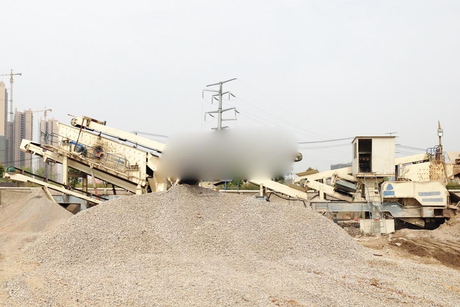

Construction waste crushing production line

Mobile construction waste crushing station for urban construction waste crushing.
asphalt mobile crushing plant
asphalt mobile crushing plant. CAG mobile crusher concrete pavement sent to Guangdong, Shenzhen, China and Italy by the Zhengzhou Mining Machinery Co., Ltd. set YPC260 mobile crusher concrete pavement successfully sent to Guangdong, Shenzhen, the YPC mobile crusher for urban road concrete pavement demolition garbage collection Reuse.
Changsha mobile concrete crushing plant, crawler type mobile crusher, construction waste recycling, crawler mobile concrete crushing plant is currently the most advanced Italian construction waste recycling equipment, its biggest advantage is the ability to construction waste in concrete shattered 40mm below the aggregate, have a material particle size.

CAG supply crushing and screening equipment for recycling
CAG supplies a full range of cost effective, heavy duty, fit for purpose recycling solutions comprising of innovative crushing and screening equipment. Our recycling solutions are ideal for a wide range of applications including quarrying, mining, industrial, infrastructure and construction. CAG's machines are designed for diverse recycling applications, including construction and demolition waste, asphalt paving, clay and concrete bricks and blocks, porcelain, ceramics, glass and other solid waste.
CAG’s recycling machines have already processed millions of tonnes of construction and demolition waste, quarry and mine waste, glass and other solid wastes and have contributed to the preservation of finite resources, the increase of the life of landfills, the reduction of carbon emissions, the saving of energy and the reduction of the carbon footprint of many of our customers.
Prospects construction waste recycling waste concrete, concrete crusher where the sale, concrete crusher, can move freely in the demolition site after work ... aggregate processing can be used to pave the way, it can be used to produce colored brick, grass brick, permeable brick.
Mobile recycling Plant for concrete and asphalt recycling
The mobile recycling solutions offer complete, versatile crushers and screens with an instant set-up time, ensuring the machines are up and running quickly. These solutions are diesel-driven and therefore work independently of electricity grid and power supply. They are cost-effective as they save installation costs and time, as well as allowing for quick and easy reconfiguration of the plant for changing production demands. These machines can be quickly and cost effectively deployed on construction sites, to recycle construction and demolition waste into usable materials, thereby reducing dumping and transport costs and reducing the use of virgin building materials.
Our skid mounted, semi-mobile recycling solutions comprise of standard, heavy-duty machines supplied to you complete and ready to run. All our machines in this range are mounted on skid-frames, do not require concrete foundations and are designed for rapid installation and easy integration with the rest of our product range. CAG supplies standard modules which are reconfigurable and scalable and therefore allow our customers to start small and change or grow their recycling plant as demand increases. A complete crushing and screening plant can typically be set up and operating at full capacity within days of arrival on site. These tried and tested machines are designed to handle the harshest conditions and toughest solid waste in all recycling applications.
Concrete Crusher provide protection for green construction site sediment recovered by CAG concrete crusher developed to solve this major problem. Concrete Crusher sometimes called construction waste crusher, which specialized crusher concrete, demolition construction waste crushing.
asphalt mobile crushing plant. Mobile crusher technical parameters of construction waste recycling, mobile crusher technical parameters CAG good, construction waste recycling into the "Twelfth Five-Year Plan" in the country's largest manufacturer of mobile crusher, crusher biggest production base is CAG.
Leave Me A Message, Now
If you have any questions regarding equipment prices, production line configuration or other problems, you can send a message to us, we will contact you soon.